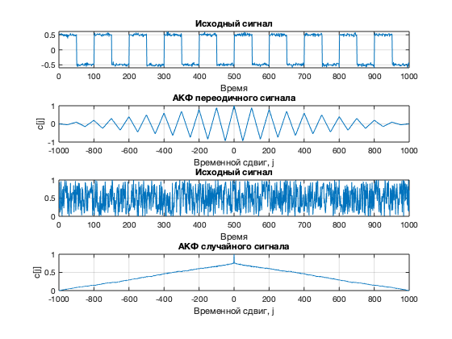
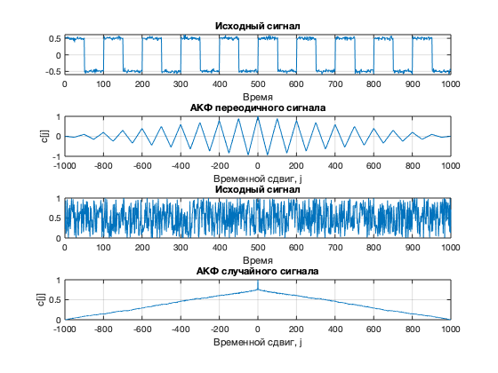
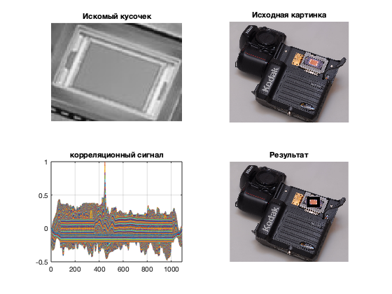

Корреляционный анализ
Contents
- Разработка скрипта корреляции двух произвольных сигналов
- Разработать скрипт, позволяющий определить периодичность (или ее отсутствие) произвольного сигнала
- Наложить на произвольный аудиофайл эффект Эхо аналогично заданию из первого семинара. Разработать скрипт, который с помощью автокорреляции убирает наложенное эхо.
- Разработать скрипт, который с помощью двумерной корреляции позволяет найти шаблон изображения внутри другого изображения.
Разработка скрипта корреляции двух произвольных сигналов
НАДО УСТАНОВИТЬ Communications Toolbox Рассмотрим два сигнала, сдвинутых по фазе на 180 градусов
close all; clear; Fs = 80; ts = 0 : 1/Fs : 6-1/Fs; x1 = sin(2*pi*1*ts); x2 = sin(2*pi*1*ts + pi); figure; subplot(2,1,1); plot(x1); grid on; title('Сигнал 1'); subplot(2,1,2); plot(x2); grid on; title('Сигнал 2'); figure; r12 = sum(x1.*x2); [xc, lags] = xcorr(x1, x2); subplot(2,1,1); plot(lags, xc), grid on; title('Кореляционый сигнал'); N = length(x1); x2 = [x2, x2]; r12 = zeros(1, N); for j = 1 : N-1 r12(j) = sum(x1.*x2(j:j+N-1)); end subplot(2,1,2); plot(r12), grid on; xlabel('Временной сдвиг, j'); ylabel('r_{12}[j]'); title('Убираем краевой эффект');
 
 т.к. у нас сигналы имеют конечную длину при сдвиге одного сигнал относительно другого,когда они не перекрываются и вместо парных произведений отсчётов получаем произведения на пустые отсчёты,у нас все ломается, поэтому мы и убираем этот момент, называемый краевым эффектом.
Из графиков видно, что исходные сигналы похожы и корреляция равна нулю при нулевом моменте. При дальнейшем сдвиге влево или вправо значение изменяется,так как колебание затухающее.
Разработать скрипт, позволяющий определить периодичность (или ее отсутствие) произвольного сигнала
Для периодичного сигнала. На графике Автокорреляционной функции однозначно видна периодичность.
clear; Fs = 80; ts = 0 : 1/Fs : 6 - 1/Fs; N = length(ts); x = 0.1 * sin(2 * pi * 0.5 * ts + 3 * pi / 4); x = awgn(x, 20); figure subplot(2, 1, 1); plot(x), grid on; title('Исходный сигнал'); xlabel('Время'); [xc, lags] = xcorr(x, 'unbiased'); subplot(2, 1, 2); plot(lags/Fs, xc), grid on; title('Автокорреляционная функция'); xlabel('Временной сдвиг');
Для случайного сигнала. Из графика видно, что для случайных сигналов график автокорреляционной функции имеет свой максимум при j = 0 и стремится к нулю с увеличением сдвига j
clear; N = 512; x = rand(1, N); [c, lags] = xcorr(x, 'coeff'); figure; subplot(2, 1, 1); plot(x), grid on; title('Случайный сигнал'); xlabel('Временные отсчёты, n'); ylabel('x[n]'); subplot(2, 1, 2); plot(lags, c), grid on; title('АКФ случайного сигнала'); xlabel('Временные отсчёты, n'); ylabel('c[j]');
Наложить на произвольный аудиофайл эффект Эхо аналогично заданию из первого семинара. Разработать скрипт, который с помощью автокорреляции убирает наложенное эхо.
clear; [x, Fs] = audioread('test.wav', [1, 100000]); figure; subplot(5,1,1); plot(x), grid on; title('Исходный сигнал'); a = 0.8; d = 15000; y = x; for i = d+1 : length(x) y(i) = x(i)+a*x(i-d); end subplot(5,1,2); plot(y), grid on; title('Сигнал с эффектом ЭХО'); [corr_f, lags] = xcorr(y, 'coeff'); corr_f = corr_f(lags>0); lags = lags(lags>0); subplot(5, 1, 3); plot(lags/Fs, corr_f), grid on; title('Автокорреляционная функция'); subplot(5, 1, 4); findpeaks(corr_f,lags,'MinPeakHeight', 0.3); [peaks, dl] = findpeaks(corr_f(200:length(corr_f)), lags(200:length(corr_f)), 'MinPeakHeight', 0.3); title('Пики автокорреляционной функции'); y_clean = filter(1,[1 zeros(1,dl-1) 0.5],y); subplot(5,1,5); plot(y_clean), grid on; title('Отфильтрованный сигнал');

Разработать скрипт, который с помощью двумерной корреляции позволяет найти шаблон изображения внутри другого изображения.
Устанавливаем Image Processing Toolbox
clear; % Искомый кусочек face = imread('find.jpg'); faceGray = rgb2gray(face); figure; imshow(faceGray); title('Искомый кусочек') % исходная картинка img = imread('test.jpg'); imgGray = rgb2gray(img); figure; imshow(img); title('Исходная картинка'); %Корреляционная функция Corr = normxcorr2(faceGray,imgGray); figure; plot(Corr), grid on; title('корреляционный сигнал'); figure; srf = surf(Corr); set(srf, 'LineStyle', 'none'); %Поиск максимума корреляционной функции [maxVal,maxIndex] = max(abs(Corr(:))); [max_Y,max_X] = ind2sub(size(Corr),maxIndex); %Рисуем прямоугольник вокруг максимума корр. функции figure; %hold on; imshow(img); rectangle('Position',[(max_X-90) (max_Y-90) 100 100],'LineWidth',4,'EdgeColor','w'); title('Результат');